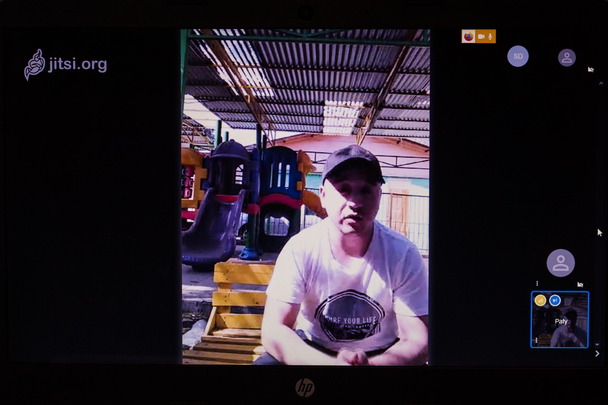
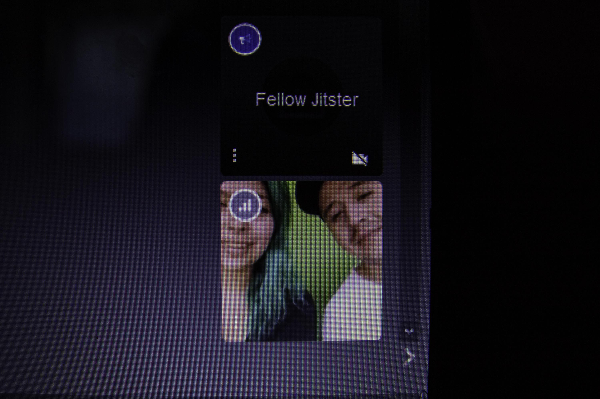
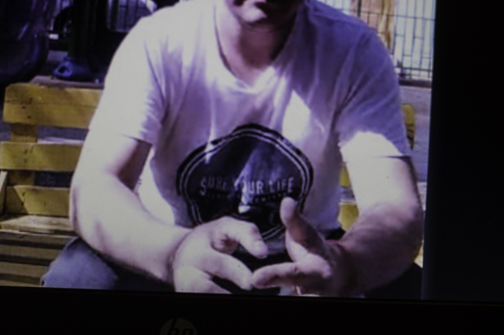

Militante del Movimiento Juvenil Lautaro (MJL). Residente de la comuna Pedro Aguirre Cerda, Región Metropolitana. Esteban y su compañera Patricia nos reciben en su casa, a través de una videollamada, en la que conversamos sobre su engorroso proceso de privación de libertad. El sol le pega en la cara, mientras habla, fuma e intenta estabilizar la conexión.

¿Nos puedes contar a grandes rasgos cómo fue el contexto de tu detención?
E: Con mis compañeros, Rubén Rivas y Gilberto Mendoza, fuimos detenidos el 30 de octubre del año pasado -año 2019- en el contexto de la revuelta popular. Nosotros somos militantes del Movimiento Juvenil Lautaro, no lo escondemos porque no trabajamos en la clandestinidad del movimiento social, asumimos nuestra posición política y subversiva al mismo tiempo.
Cuando me suben al carro policial, las personas que iban a cargo expresaron, que para ellos la forma de arreglar las cosas era llegar a la comisaría, sacarnos la chucha y después ir a tirarnos a cualquier lugar. Luego de eso, entra personal de carabineros del OS9 encapuchado. No se identifica con el oficial a cargo del proceso de detención y le expresa que a nosotros no se nos puede tocar, porque ya tenía dispuesto el artículo de ley por el cual nos tenían que procesar, el artículo 105 de la ley de ferrocarriles. Nos identifica rápidamente a mi y a Rubén como parte del Movimiento Juvenil Lautaro y dice que se nos va a pasar por unas supuestas barricadas en las líneas férreas que vamos a irnos en proceso de detención y que vamos a hacer cana. Esta persona se nota que llevaba un seguimiento hacia nosotros, de hecho se nos expresa que venimos con seguimiento desde hace un año por parte del OS9.
Esta persona procede a amenazar también a mi compañera a viva voz.
¿La prisión preventiva se da inmediatamente?
E: De forma inmediata. De hecho ese día se suponía que nosotros nos íbamos a ir, que íbamos a quedar con una medida cautelar como firma o algo más leve.
¿A ustedes los detienen en Pedro Aguirre Cerda?
E: En una primera declaración carabineros señala los puntos reales en que fuimos detenidos. No fuimos detenidos los tres en el mismo punto, caemos los tres por separado. Luego se contradicen en la segunda versión de sus declaraciones diciendo que nos encontraron en las barricadas. Nosotros reconocemos los puntos en que caímos detenidos y esos puntos estaban a un kilómetro del suceso -el más cercano-. Cualquier vecino era propenso a caer ese día, cinco personas son las que caen detenidas y otras dos se van solamente por no pertenecer al Lautaro, como no pertenecen no les iban a asumir ningún cargo, no les tomaron declaraciones ni nada.
¿Crees que es una persecución política o una acción que pudo estar pensada desde antes?
E: Al tener prisión preventiva el trabajo territorial se para. Les daba miedo un posible alzamiento en el territorio. Nosotros no nos escondemos, hacemos actividades culturales en frente de todos, finalmente la idea es ir recuperando espacios, pero a ellos; tanto al poder como a carabineros, le molesta nuestro quehacer. Una forma de detenernos a nosotros que somos dirigentes sociales, a parte de tener militancia.
Los tres fumamos cigarro, todos andábamos con encendedor, o sea, ¿cualquier persona que cae por un encendedor es un peligro para la sociedad?.
¿Esta salida representa el cuarto cambio de medida cautelar?
E: Sí, cuarto cambio de medida cautelar. El 9 de abril fue la revisión de medida cautelar y el Juzgado de Garantía una vez más falla a nuestro favor, esto porque el tribunal mantiene el criterio de que no somos un peligro para la sociedad y que no contamos con antecedentes. Todo depende del gobierno de turno, los pretextos por los que aplica la ley, no hay un criterio en cuanto a lo que puede ser el delito sino que todo va en la ideología política. Ahora salimos por cuarta vez, nos acogen la medida, apela nuevamente el Ministerio del Interior -es el primero en apelar a la medida cautelar- y esto la visión que te deja es que el gobierno está obsesionado por tener a los luchadores sociales en la cárcel.
¿Ahora estás con arresto domiciliario total?
E: Ahora estoy con arresto domiciliario total.
El 9 de abril salgo de la sección de máxima seguridad del CAS, la cárcel de alta seguridad. Puedes darte cuenta que nuestro caso es un caso político ya que nos tienen, sólo por ser parte del Movimiento Juvenil Lautaro, encerrados en una cárcel que tiene un régimen de 21 horas de encierro. Pasas 21 horas encerrado en una habitación solo, tienes 1 hora y 30 minutos de pasillo y 1 hora y 30 minutos de patio.

¿Estaban ustedes con otros presos políticos de la revuelta?
E: El 30 de octubre se había dictaminado que teníamos que ir a Santiago 1, nosotros esperábamos haber llegado a la sección de prisión política que se armó allá; finalmente, cuando estábamos en el camino a llegar a Santiago 1, Gendarmería levanta un informe de que nosotros no podemos ir a Santiago 1 porque somos un peligro para ellos. Temían que pudiésemos hacer un tipo de motín y dictan que tenemos que ser trasladados a la sección de máxima seguridad de la Cárcel de Alta Seguridad (CAS) una de las cárceles más restrictivas hoy en Chile. Ahí se evidenció que fue porque nosotros somos parte del Lautaro, sabían que nuestro discurso podía pegarle a otros presos y levantarles la cárcel.
No éramos necesarios para que existiera un motín en Santiago 1, por las pésimas condiciones sanitarias que mantienen en las cárceles. Ellos quieren imponer las mayores condenas a los luchadores sociales.
¿Qué cosas te hacían mantener la calma en ese régimen de 21 horas encerrado? Para Paty (su compañera), ¿cómo era estar en la casa con les niñes, donde encontrabas calma? Imagino que el régimen de visitas era restringido, ¿cada cuánto se podían ver?
E: Dos visitas a la semana, tres horas cada una. En estas visitas sólo podían pasar familiares directos, hermanos, padres, pareja e hijos. Se nos prohibía la lectura política, mi compañera no podía mandarme ningún texto que tuviese que ver con política porque lo dejaban fuera.
P: Al principio fue muy fuerte. Cuando recién cayeron y supimos que iban a quedar en prisión preventiva con mis otras compañeras, la pareja de Rubén y Gilberto, se nos cayó el mundo, no sabíamos qué hacer ni nada. Fuimos a Santiago 1 a preguntar el día que tenían encomienda, cuando llegamos nos dijeron que no estaban, no se nos informó que habían sido trasladados a otra cárcel. No supimos nada de ellos en el transcurso de cinco días, fue ahí cuando supimos que estaban en la CAS, lo que nos tranquilizó...
E: Fue traumático. Llegar, que nos movieran tan bruscamente -de cárcel- y además mantenernos bajo un régimen casi de castigo desde el principio. Te meten a tí en cana, pero no se preocupan de decir "mira, sabes que este cabro estaba alimentando bocas que hay que seguir alimentando", pero socialmente las mismas personas de las poblaciones, lugares en que nosotros solíamos trabajar, organización sociales, han mandado harto apañe.
¿El apoyo del Movimiento Juvenil Lautaro también se expresa a través de la Organización de Familiares y Amigos de Presos Políticos? ¿Guacolda también?
E: Exacto, Guacolda es nuestra organización. Guacolda se arma o nace desde las primeras canas que empieza a hacer Lautaro en el año 1994-1995, cuando cae casi todo el Lautaro preso, esto cesa el año 2005 ya con todos los presos políticos lautarinos fuera de las cárceles y se rearma otra vez porque hay nuevamente prisioneros políticos del Lautaro en la cana.

¿Qué significa para ti ser un preso político de la última revuelta en Chile?
E: Uno nunca puede estar orgulloso de ser prisionero político, porque la idea es nunca caer y siempre poder estar dando la lucha, pero hoy siento una profunda solidaridad con los demás presos. Hoy en día soy privilegiado de estar en mi casa, de poder hablar con ustedes, de estar con mi pareja, con mis hijos, pero el sentimiento es de rabia, rabia de que aquí no existe libertad de opinión, ni libertad de creencia política, no tienes la libertad que pregona la democracia, no existe.
Hoy y durante toda la democracia hemos visto que los luchadores sociales caen presos o están muertos, tienes dos caminos, hoy además de la rabia hay un agradecimiento "chucha, por último caí preso". La idea es llevar adelante una instancia jurídico política para sacar a los demás compañeros que están presos, si bien nosotros estamos en casa, la lucha por la libertad no termina, la cárcel está a la vuelta de la esquina esperándonos en caso de un juicio y las garantías deben ser para todos los presos políticos, que todos tengamos garantías de un juicio justo, que esta prisión excesiva que está ejerciendo el Estado sea revocada y por último que podamos cumplir un arresto domiciliario total.
En el marco del COVID-19, dentro de la cárcel de alta seguridad, ¿como son las condiciones higiénicas y de salud? ¿cómo enfrentaron la urgencia sanitaria?
E: La cárcel es un mundo aparte, es como si afuera no estuviera pasando nada. Dos días antes de que yo saliera recién gendarmería estaba empezando a usar mascarillas. Su método de contención del virus es al mismo tiempo un castigo. Nosotros estuvimos con personas que venían de la cárcel de Puente Alto, cuando se supo de dónde venían los tomaron, los llevaron a un piso en donde no hay más presos y los dejaron encerrados ahí aislados durante dos semanas, te castigan por enfermarte.
Tienes un enfermero que llega a las 8:30 am se va antes de las 12 del día y después, si llega, no lo ves hasta las 17:00 pm, finalmente lo ves a las 21:00 hrs que es la hora de repartir los últimos tratamientos, de ahí se va y no hay médico hasta el otro día. Las condiciones del hospital penal tampoco son muy buenas, es un hospital chico, no cuenta con el espacio para generar distanciamiento social entre personas, las camas están unas a un lado de otras y el personal médico -por lo que se ve- no tiene muchos insumos.

Cuéntanos sobre la huelga de hambre que ustedes hicieron en la cárcel
E: El 10 de diciembre (2019) iniciamos la huelga de hambre, la iniciamos ese día por ser el Día Internacional de los Derechos Humanos, con el sentido de que organismos de DDHH comenzaran a pronunciarse sobre prisión política. Tuvimos visitas del INDH y no hubo un informe en aquel momento que hablara de prisión política, de hecho al día de hoy aún no hay un informe que hable de forma contundente de presos políticos, salvo -haciendo salvedades- la organización de DDHH de la casa de memoria Jose Domingo Caña, son los primeros en leer el caso y denunciar que esto era una prisión política.
¿Quieres dar un mensaje?
E: Lo primero es exigir la libertad de todos los presos políticos. Llamar a organización sociales, a los compañeros que están saliendo, quedando en libertad o hoy como yo -arresto domiciliario- a no parar el trabajo. Estamos confinados en nuestras casas pero podemos luchar para sacar a los compañeros que siguen en la cárcel. Llamar a las organización sociales, partidos políticos, que se pronuncien en torno a la prisión política de forma contundente y que se haga un proyecto de ley para sacar a los prisioneros políticos, que puedan cumplir arresto domiciliario total y presentar una querella contra el Estado por el abuso de esta Ley de Seguridad Interior del Estado. La lucha social no es un crimen y está levemente justificada. Llevamos 30 años donde nos metían el dedo en el ojo y ya la gente se cansó, ellos mismos provocaron lo que pasó el 18 de octubre.